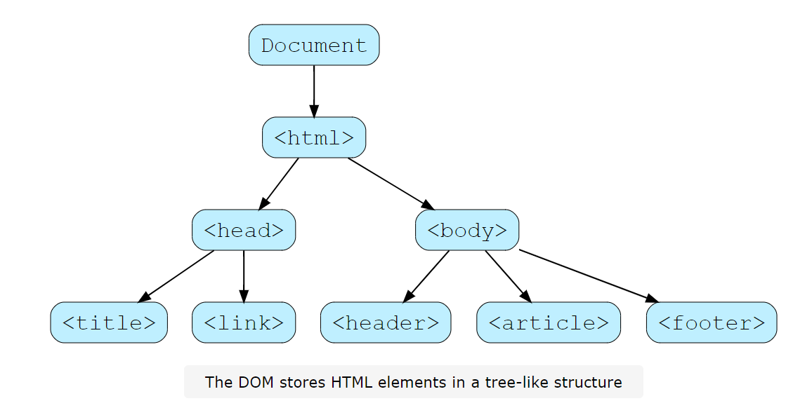
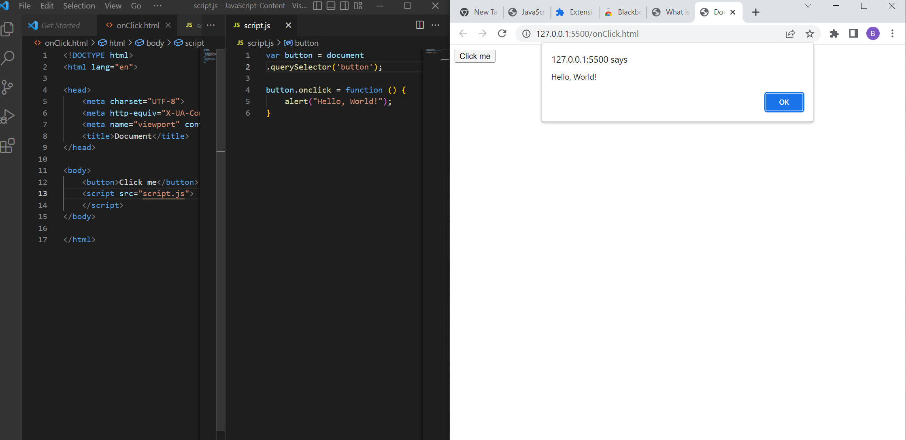
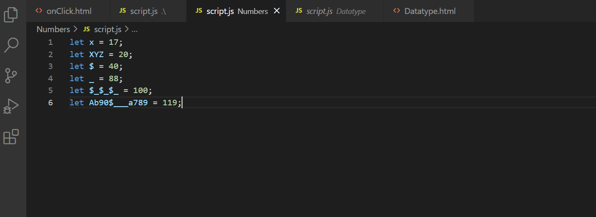
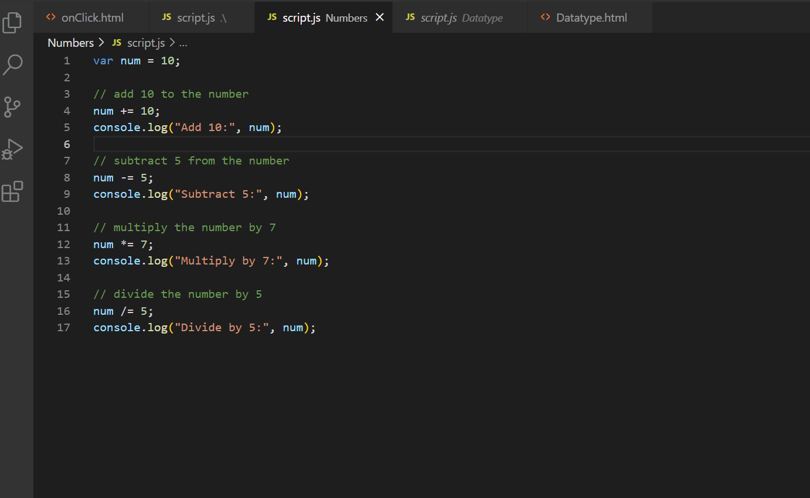
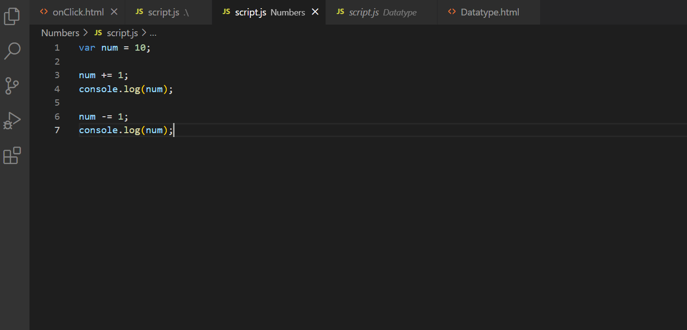
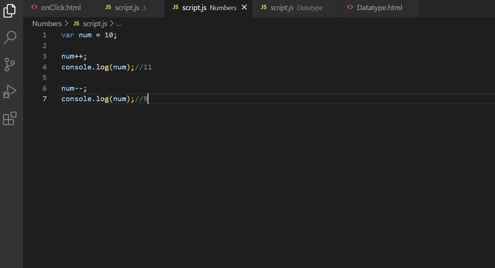
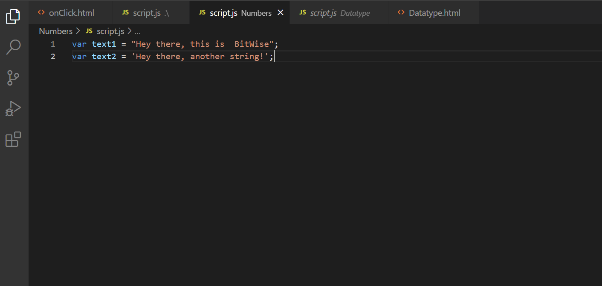
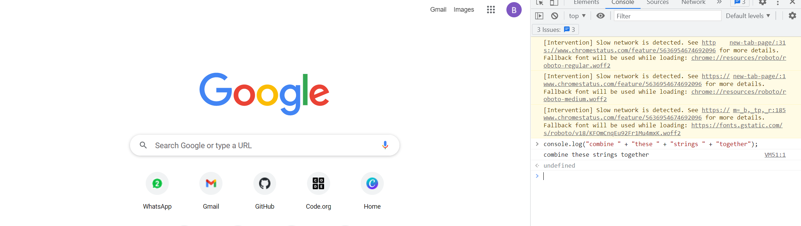
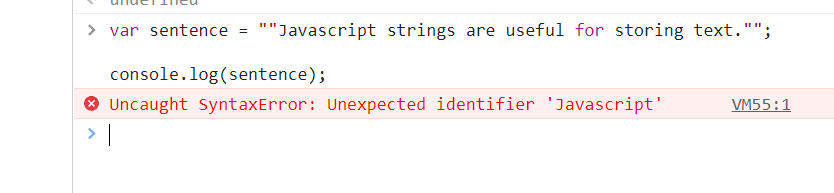
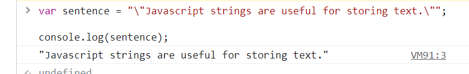

Javascript is the programming language of the web. So far, we have used HTML to structure the content of our web pages and CSS to stylize our content. But what if you want to have your web page change based on input from your user? Javascript allows us to take our pages from static web pages to dynamic web applications.
One of the main reasons we use Javascript to build interactivity is because it allows us to manipulate the Document Object Model (or DOM) for short. The DOM stores HTML elements as objects that can then be manipulated in various ways.

Using Javascript, we can manipulate the DOM to do things like:
1.Modify existing HTML elements
2.Modify attributes on HTML elements
3.Add or modify the CSS associated with HTML elements
4.Add and delete HTML elements
Let’s start looking at how we can use Javascript to build in interactivity to our websites by
capturing
input from the DOM. Don’t worry if you don’t totally understand what the code is doing just yet.
Your JavaScript link should be in end of the body tag on HTML.So that, It will wait to perform function after getting inputs from the User or command from the user.
Let’s dig in deeper and examine the first line in our code:
The var keyword is used to declare a variable. Variables are useful for storing data that we may want to
use later.
The code after the = sign assigns a value to the variable. It does this by finding the first element in
the document that matches the selector wrapped in quotation marks, and then storing it in button.
Therefore, the first line creates a variable and stores the first button element it finds
in our HTML.
Just storing the button is fairly boring though. Our next step is to figure out how to
interact
with the button. One of the main ways we can do this is by adding an event listener that
tells
our program to execute some code when a user does something on the web page.
In the code above, we tell the program to execute the code stored in a function when a user clicks on the button. Functions are used to store code you may want to execute more than once. In this case, the function will create a pop-up with the message “Hello, World!” every time a user clicks on the button.
Before we dive deeper into DOM manipulation, it is important to understand some programming fundamentals. These fundamentals will allow you to engage more deeply with the different programming interfaces the browser provides that allow you to interact with the DOM.
We create a variable with the let keyword. We write let and then the variable name and value on the right hand side. We have to use =, just like a line from algebra.
let number = 10;
The variable number now has the value 10.
We can also use the var keyword to declare a variable. It does essentially the same thing but behaves a little differently, sometimes in unexpected ways. let was added to the language in 2015.That's is the latest one.
A variable name must follow these rules:
* Variable names must begin with a letter, $, or _
* Variable names can contain letters, numbers, _, and $
* Variables are case sensitive - number is different from Number
* Reserved JavaScript keywords (such as let and var) cannot be used as variable names
As long as we follow these rules, we can name a variable whatever we like. The following are valid JavaScript variable names.
Feel free to run this code and try out different variable names.

When it comes to programming,everything you do revolves around storing and
manipulating
data. This data always has a type associated with it that tells the computer exactly how to
handle the
data that it’s given. In Javascript, the data’s type is automatically determined when the code is
executed.
That's why Javascript is called Dynamically typed language.
What exactly do we mean by this? Let’s take a look at an example.
(For your reference, console.log() outputs to the console whatever data is passed to it in between the
parenthesis. Run the code below to see the output.)
var number1 = 10;
var number2 = 20;
console.log(number1 + number2);
What do you expect this code to do?
Javascript looks at the variables declared and determines they are both numbers. Javascript then knows
it needs to output the sum of the two numbers to the console.
Numbers are a numeric data type. Numbers can be integers, floating-point (numbers with a decimal), or exponential values like those you would find with scientific calculator.
var number1 = 10;
var number2 = 20;
console.log(number1 + number2);
All numbers in Javascript are stored using 64 bits of memory. it’s important to know that there are
finite limits to the size of number you can store.
In practice, this shouldn’t be an issue, unless you’re working with really large numbers. Each
bit represents a binary value (e.g. 0 or 1). With 64 bits, the maximal integer you can represent is 2^53
- 1, or 9007199254740991.
A comment is something written in between actual code to help explain that code. JavaScript comments start with two slashes //. Anything written on a line after // will not be interpreted as code and will not run.
// Comments help explain code.
// Anything after the "//" on a line is a comment
// and will not be interpreted as code.
// This next line of code prints something to the console.
console.log('Hi!'); // We can also have comments on the same line as code.
Comments are a tool for developers to write notes on their code. They’re meant to explain complex pieces of logic so that others can understand the code. The JavaScript engine will remove them before actually running code.
For large amounts of comments, we can use a comment block. A comment block is created with /* and */. Anything between those two items, even across multiple lines, is a comment.
Use the + operator to add numbers and the - operator to subtract numbers.
console.log(50 + 50); //Addition operation on two numbers
console.log(40 - 10); //Subtraction operation on two numbers
Use the * operator to multiply numbers and the / operator to divide numbers.
// use the * operator to multiply
var multiply = 10*10;
// use the / operator to divide
var divide = 10 / 5;
// operations on integers can result in floating point values, and vice versa
var float = 10 / 3;
console.log(multiply)//result is 100;
console.log(divide)//result is 2;
console.log(float)//result is 33.3;
The modulo operator,%, can be used to find the remainder of a division operation between two integer values.
console.log(10 % 3); // 10 divides by 3 three times, with a remainder of 1
console.log(10 % 4); // 10 divides by 4 twice, with a remainder of 2
console.log(10 % 5); // 10 divides by 5 exactly twice, so no remainder
You can increase or decrease a number’s value by adding, subtracting, multiplying, or dividing it by another number:
var num = 10;
// add 10 to the number
num = num + 10;
console.log("Add 10:", num);
// subtract 5 from the number
num = num - 5;
console.log("Subtract 5:", num);
// multiply the number by 7
num = num * 7;
console.log("Multiply by 7:", num);
// divide the number by 5
num = num / 5;
console.log("Divide by 5:", num);
You can simplify the above code by using +=, -=, *=, and /= shorthand operators to increase or decrease a number’s value, like this

These operations are often times referred to as incrementing or decrementing a value:
1.in the case of +=, the value is being incremented by a constant value
2.in the case of -=, the value is being decremented by a constant value
3.in the case of *=, the value is being incremented by a multiple
4.in the case of /=, the value is being decremented by a multiple
There are many instances where you will want to increment or decrement a value by one.
In this case, you can use the ++ and -- operators as a further shorthand:
Now that you have learned about Numbers in javascript, let’s learn about Strings:)
Strings, another basic data type, represent a string (or sequence) of characters. Strings are how we represent text values in our code.
Strings can be created by wrapping text in single ('') or double ("") quotation marks.
Operations on strings are limited. For instance, you cannot subtract, multiply, or divide a string with another string. You can, however, concatenate (combine) strings using the + operator.
There are many string values that require escaped characters.
Let's say you want to include a quote in quotation marks. Do you think the following code will run correctly?
If you run the following code, you’ll see that the system throws an error.
This is because the " is a reserved character that indicates the start and end of a string. In the above code, we have two empty strings and some text in the middle that the program doesn’t recognize.
In order to indicate that we want to use the " as a quotation mark, we have to escape the character using a backslash (\).

Let’s break down this example:
*The first " indicates the start of the string
*The escaped characters (\") are used to include quotation marks in the string
*The last " indicates the end of the string
There are a few different characters that you must escape in order for the program to interpret a string
in the correct way. These include:
*a single quote - \'
*a double quote - \"
*a backslash - \\
Escaped characters can also be used to add tabs or go to the next line in your strings, with the
following:
*a new line - \n
*a tab - \t
Note:Click 'Next Page' to continue learning.